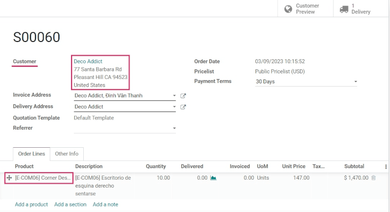

Consignment: buy and sell stock without owning it¶
Most of the time, products stored in a company’s warehouse are either purchased from suppliers, or are manufactured in-house. However, suppliers will sometimes let companies store and sell products in the company’s warehouse, without having to buy those items up-front. This is called consignment.
Consignment is a useful method for suppliers to launch new products, and easily deliver to their customers. It’s also a great way for the company storing the products (the consignee) to earn something back for their efforts. Consignees can even charge a fee for the convenience of storing products they don’t actually own.
Enable the consignment setting¶
To receive, store, and sell consignment stock, the feature needs to be enabled in the settings. To do this, go to , and under the Traceability section, check the box next to Consignment, and then click Save to finish.

Receive (and store) consignment stock¶
With the feature enabled in Odoo, consignment stock can now be received into a warehouse. From the main dashboard, click into the Receipts section. Then, click Create.
Note
Consignment stock is not actually purchased from the vendor; it is simply received and stored. Because of this, there are no quotations or purchase orders involved in receiving consignment stock. So, every receipt of consignment stock will start by creating manual receipts.
Choose a vendor to enter in the Receive From field, and then choose the same vendor to enter in the Assign Owner field.
Important
Since the products received from the vendor will be owned by the same vendor, the Receive From and Assign Owner fields must match.
Once the vendor-related fields are set, enter products into the Product lines, and set the quantities to be received into the warehouse under the Done column. If the Units of Measure feature is enabled, the UoM can be changed, as well. Once all the consignment stock has been received, Validate the receipt.

Sell and deliver consignment stock¶
Once consignment stock has been received into the warehouse, it can be sold the same as any other in-stock product that has the Can Be Sold option enabled on the product form.
To create a sales order, navigate to the app, and from the Quotations overview, click Create. Next, choose a customer to enter into the Customer field.
Note
The Customer must be different from the Vendor that supplied the consignment stock received (and stored) in the warehouse.
Add the consignment product under the Product column in the order lines, set the Quantity, and fill out any other pertinent product details on the form. Once the quotation is complete, click Confirm.
Once the RFQ has been confirmed, it will become a sales order. From here, the products can be delivered by clicking on the Delivery smart button, and selecting Validate to validate the delivery.
Traceability and reporting of consignment stock¶
Although consignment stock is owned by the vendor who supplied it, and not by the company storing it in their warehouse, consignment products will still appear in certain inventory reports.
To find inventory reports, go to , and choose a report to view.
Note
Since the consignee does not actually own consigment stock, these products are not reflected in the Stock Valuation report, and have no impact on the consignee’s inventory valuation.
Product moves report¶
To view all information about on-hand stock moves, navigate to the the Product Moves dashboard by going to . For consignment products, the information in this report is the same as any other product: the history of its product moves can be reviewed; the Quantity Done and Reference document are available; and its Locations are available, as well. The consignment stock will originate from Partner Location/Vendors.
Tip
To view a consignment product’s moves by ownership, select the Group By filter, choose the Add Custom Group parameter, and then select From Owner, and Apply to finish.
Tip
To see forecasted units of consignment stock, go to .
Stock on hand report¶
View the Stock On Hand dashboard by navigating to . From this report, the Locations of all stock on-hand are displayed, in addition to the quantities per location. For consigment products, the Owner column will be populated with the owner of those products, or the original vendor who supplied the products in the first place.